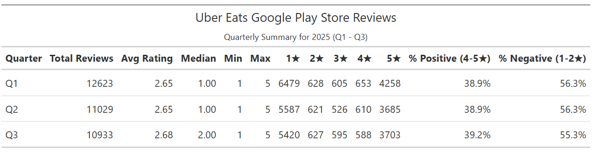
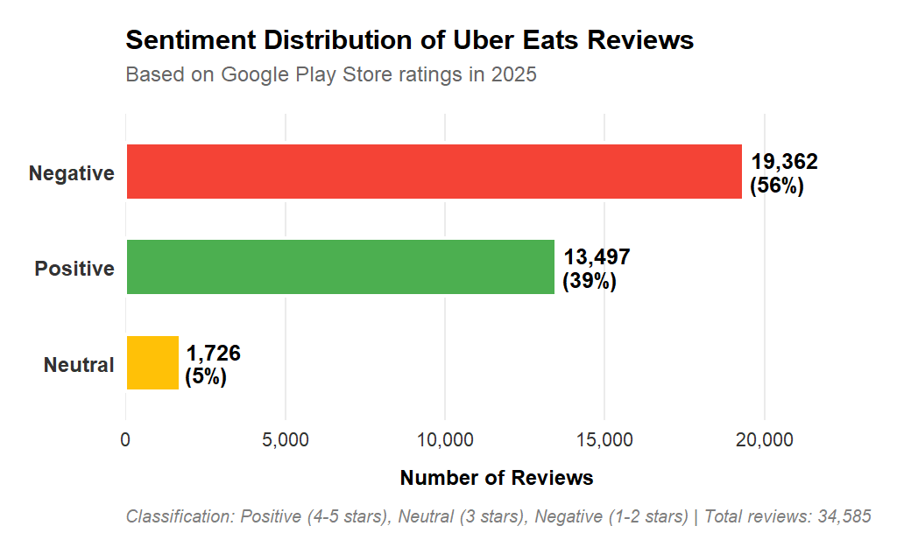
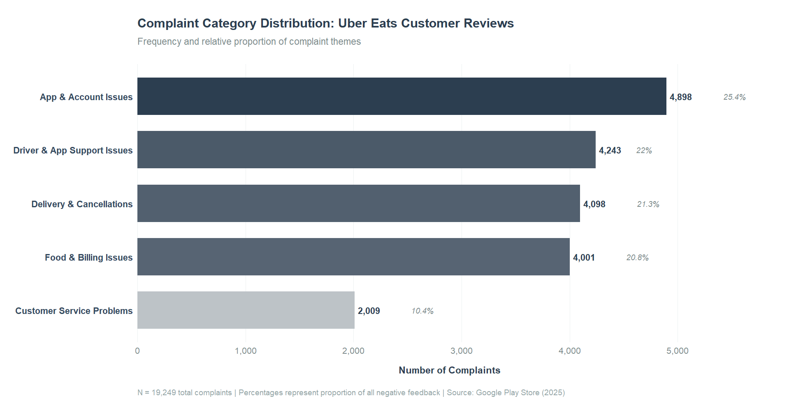

Table of Contents
Monthly Trend Analysis
Overall Sentiment Breakdown
Positive Sentiment Drivers
Executive Summary
In 2025, Uber Eats experienced a significant decline in its Google Play Store performance. The proportion of positive reviews fell from 54.7% in 2024 to just 39.0% in 2025, marking a steep drop in customer satisfaction within a single year. Correspondingly, the average app rating decreased to 2.66 stars, with 56.6% of total reviews classified as negative.
A detailed analysis of review content revealed that most negative feedback focused on technical and service-related issues. Customers also frequently expressed frustration with slow or unresponsive customer support, which emerged as a recurring theme across reviews; 81.8% of users explicitly requested faster and more effective assistance.
Conversely, positive reviews consistently emphasized Uber Eats’ convenience, user-friendly interface, and reliability of delivery in certain regions, suggesting that the platform continues to deliver value when operational performance meets expectations.
Given these insights, our report recommends that Uber Eats prioritize enhancements to its customer support infrastructure, including faster response times, clearer communication channels, and improved issue resolution processes. In addition, optimizing app stability and refining delivery operations could further help restore consumer trust and improve overall satisfaction on the platform.
Introduction
The purpose of this report is to deliver a comprehensive analysis of Uber Eats’ performance on the Google Play Store, drawing insights from large-scale user review data. This report is designed for Uber Eats product managers, marketing teams, investors, and industry competitors who are seeking actionable intelligence on user sentiment, app performance, and overall market positioning.
A total of 95,633 reviews were collected between January 2024 and September 2025. All data was anonymized, and advanced sentiment analysis techniques were applied to identify recurring patterns in user feedback, including both complaints and positive experiences.
We believe that user ratings and reviews on the Google Play Store provide a direct reflection of customer sentiment and are a reliable proxy for measuring product-market fit, user satisfaction, and retention potential. This report categorizes user feedback into key areas where customers believe the app requires improvement, such as usability, reliability, and customer support, as well as areas where users expressed strong satisfaction, underscoring the app’s value proposition.
App store reviews are particularly critical for companies whose primary offering is a mobile application, as they influence download decisions, retention rates, and overall brand reputation. Accordingly, this report offers a strategic snapshot of Uber Eats’ market position in 2025, with a specific focus on its Google Play Store ecosystem performance. By highlighting key metrics, recurring pain points, and strengths, the analysis provides valuable insights into Uber Eats’ competitive standing and identifies opportunities for future growth and product optimization in the fast-evolving on-demand food delivery sector.
Uber Eats App Overview
The following table gives a snapshot of Uber Eats market position (2025 revenue, countries active, competition).
| Metric | Value / Estimate |
|---|---|
| 2024 Revenue | ~$13.7 billion globally. |
| Gross Bookings (2024) | ~$74.6 billion. |
| Number of Users (Global, early 2025) | ~95 million. |
| Number of Restaurants / Merchants | Over 1 million restaurant partners, in ~11,500 cities. |
| Geographic Reach | Operates in 45+ countries and over 6,000 cities (global footprint across Asia-Pacific, North & Latin America, Europe, Africa). |
| Total downloads (Play Store) | 100 million + |
| Average Rating | 4.8 |
Ratings Performance in 2025
Monthly Trend Analysis
Uber Eats ratings faced a drastic drop in February 2025, but went back up the following month. Their current highest average monthly rating is on Septemeber, which is a possible sign of improvements on the application from customers’ reviews.


Quarterly Summary
Uber Eats experienced a drop in positive ratings across all quarters.

Uber Eats 2024 vs. 2025 Ratings Performance
Compared to 2024, Uber Eats’ average positive review ratings dropped from 54.7% to 39%, while their average negative review ratings increased from 41.2% to 56.0%.

Sentiment Analysis
Overall Sentiment Breakdown
Negative reviews from users were the highest by 56%.

The word cloud suggests that most reviews were regarding the service, orders, and the application.

Negative Sentiment Drivers
25.4% of the negative reviews were a result of complaints on the Uber Eats application, and also account issues.

Positive Sentiment Drivers
33.3% of reviewers praised the Uber Eats application for its ease of use and convenience.

Feature Request Insights
The most desired feature from users is faster customer support.

Recommendations
Based on the analysis of Uber Eats customer reviews, several key insights emerge across complaints, feature requests, and praise. The most frequent issues raised by users relate to app and account problems, which represent 25.4% of all complaints. This suggests, Uber Eats should prioritize improving the stability and reliability of its platform. Similarly, driver and app support issues account for 22% of complaints, highlighting the need for more efficient communication channels between drivers and customers. Real-time chat, clearer delivery status updates, and responsive technical support would help resolve these concerns effectively.
Delivery and cancellation issues (21.3%) are another major source of dissatisfaction. Many users likely experience inconvenience when orders are delayed or canceled without clear explanations. Uber Eats could address this by offering proactive notifications, transparent refund processes, and possibly compensation mechanisms for service disruptions. Food and billing problems, which make up 20.8% of complaints, indicate a need for greater accuracy in menu listings and pricing, as well as more streamlined billing dispute resolutions. Customer service problems, although representing a smaller proportion (10.4%), are closely tied to user dissatisfaction overall and should not be overlooked. Faster, more empathetic, and accessible customer service would directly address both complaints and feature requests.
Feature requests reinforce this need for improvement in customer support, with an overwhelming 81.8% of users asking for faster response times. Uber Eats could greatly benefit from expanding 24/7 live support options, integrating AI-assisted help desks, and providing users with estimated response times. Other frequently requested features, such as better restaurant filtering options (7.6%) and scheduled delivery (6.7%), indicate that users value personalization and flexibility in their ordering experience. Although dark mode (3.9%) ranks lowest, it remains a simple enhancement that could improve user comfort and satisfaction, particularly for late-night users.
On the positive side, Uber Eats receives significant praise for its ease and convenience, which accounts for 33.3% of all positive reviews. This demonstrates that users appreciate the platform’s simplicity and speed, and these strengths should remain a focal point in its marketing and product design. Service quality and reliability (18.4%) and food quality and enjoyment (17.9%) are also key contributors to positive sentiment, reflecting well on the company’s partnerships with restaurants and delivery operations. Additionally, users highlight positive experiences with the app and platform (16.1%) as well as brand trust and appreciation (14.3%), suggesting a generally strong perception of reliability and credibility.
Overall, Uber Eats should continue to leverage its strengths in convenience and user trust while addressing recurring frustrations around technical reliability and customer support. By investing in faster, more efficient support systems, improving app performance, and introducing user-requested features such as scheduling and better filtering, the company can enhance satisfaction, reduce churn, and strengthen its competitive advantage.
Contact
Inquiries and correspondence concerning this report should be directed to:
Adejumo Ridwan Suleiman
Editor-in-Chief
Email: admin@learndata.xyz
Phone: +234 703 285 7263